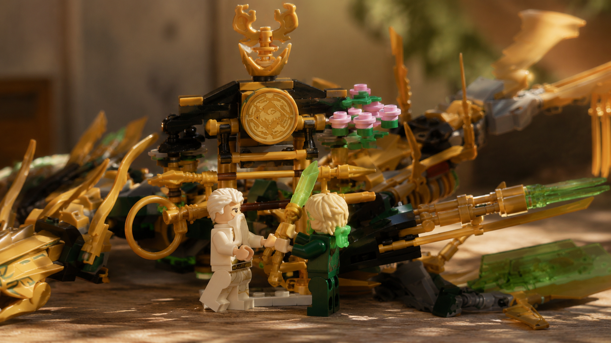

MASTER WU · LLOYD · THE TEMPLE
A machine with a story.
Master Wu's removable Temple carries the golden Japanese hat, weapons, blossoms and display details. Lloyd stands beside Wu as the engineer associated with the mechanical dragon. The module adds narrative identity without replacing the dragon as the star.